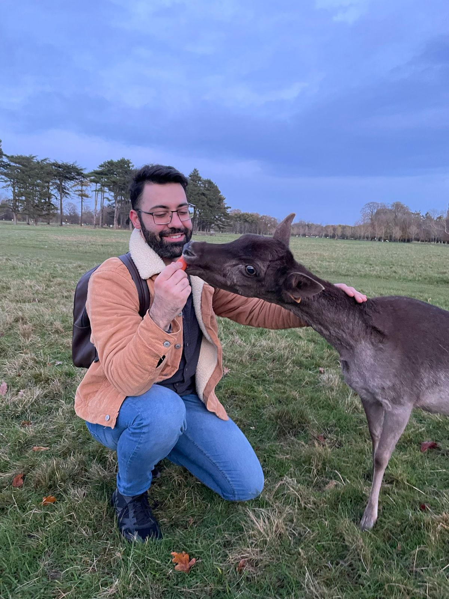

Decidir fazer um intercâmbio foi uma das melhores escolhas da minha
vida. Optei por Dublin, na Irlanda, para aprimorar meu inglês e, ao
mesmo tempo, me imergir em uma nova cultura. Minha jornada foi
repleta de aprendizados e descobertas que transformaram não apenas
meu conhecimento do idioma, mas também minha visão de mundo.
Durante meu tempo em Dublin, tive a oportunidade de estudar em uma
escola de idiomas renomada, a International House. As aulas eram
dinâmicas e interativas, o que facilitou meu aprendizado e me
motivou a praticar constantemente. Ao mesmo tempo, consegui um
emprego que me permitiu aplicar o inglês no dia a dia. Essa
combinação de estudos e trabalho foi essencial para meu
desenvolvimento linguístico. O contato constante com nativos e
outros estudantes internacionais me desafiou a me comunicar de forma
clara e confiante.
O Encanto de uma Nova Cultura
Um dos aspectos que mais amei na minha experiência foi o contato com
a cultura irlandesa. Desde a gastronomia deliciosa até as tradições
e festivais locais, cada dia era uma nova oportunidade de aprender
algo novo. A hospitalidade dos irlandeses também me impressionou;
eles são conhecidos por serem amigáveis e acolhedores. Isso fez com
que eu me sentisse em casa, mesmo estando a milhares de quilômetros
da minha.

Explorar os pubs tradicionais, ouvir músicas ao vivo e conversar com
os locais foram momentos que me marcaram profundamente. Cada
interação era uma chance de entender melhor não só a língua, mas
também a história e as tradições daquele povo vibrante.
Meu intercâmbio em Dublin foi mais do que apenas aprender inglês;
foi uma experiência transformadora que me permitiu crescer como
pessoa. Aprendi a me adaptar a novos ambientes, a valorizar as
diferenças culturais e a ser mais independente. A cada desafio,
encontrei uma oportunidade de evolução.
Recomendo a todos que considerem um intercâmbio como uma forma de se
desenvolver pessoal e profissionalmente. As lições que aprendi e as
amizades que fiz ficarão comigo para sempre. Se você está pensando
em estudar inglês no exterior, Dublin é, sem dúvida, uma escolha que
trará experiências inesquecíveis.